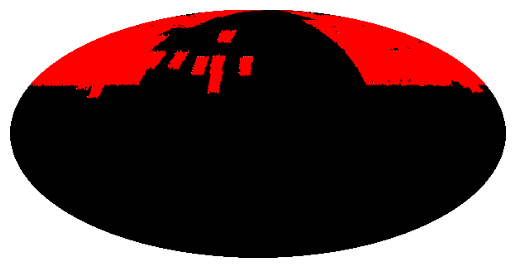
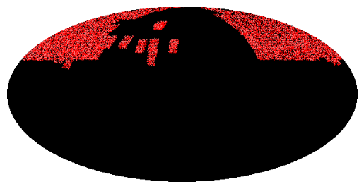

Query the sources of a VizieR table that are in a sky region¶
[1]:
import astropy.units as u
from mocpy import MOC
First, we retrieve the MOC for VizieR table VIII/84/7c
[2]:
moc = MOC.from_vizier_table("VIII/84/7c", nside=64)
[3]:
moc.display_preview()

Then, we query Hipparcos catalogue to get all sources in the MOC coverage
[4]:
# table = moc.query_simbad(10000)
table = moc.query_vizier_table("I/239/hip_main", max_rows=100000)
table
_RAJ2000 _DEJ2000 recno HIP ... Notes _RA.icrs _DE.icrs
deg deg ... deg deg
-------------- -------------- ------ ------ ... ----- ------------ ------------
1.5468688953 87.8894244013 513 513 ... 1.54686890 87.88942440
4.0222774349 88.4011934198 1284 1284 ... 4.02227743 88.40119342
4.4701298766 44.5779461534 1433 1434 ... 4.47012988 44.57794615
4.5823503880 44.5584124080 1473 1474 ... 4.58235039 44.55841241
4.5953557332 44.0229534917 1474 1475 ... 4.59535573 44.02295349
4.6695923454 44.6299885536 1495 1496 ... 4.66959235 44.62998855
4.6757036057 43.7911411989 1500 1501 ... 4.67570361 43.79114120
4.9750713825 44.7094160244 1591 1593 ... 4.97507138 44.70941602
5.1325470462 43.6942792303 1639 1641 ... 5.13254705 43.69427923
5.1375081607 45.5089274590 1640 1642 ... 5.13750816 45.50892746
... ... ... ... ... ... ... ...
282.1275858638 72.4330734846 92200 92284 ... D 282.12758586 72.43307348
282.2003081762 68.8765968536 92222 92306 ... 282.20030818 68.87659685
283.2537664404 71.7872258744 92587 92672 ... 283.25376644 71.78722587
283.5993944657 71.2971919103 92697 92782 ... 283.59939447 71.29719191
284.3387071233 71.9985386037 92974 93059 ... 284.33870712 71.99853860
284.4097604809 72.8411366755 92995 93080 ... 284.40976048 72.84113668
309.6976234553 89.4065064126 101792 101884 ... 309.69762346 89.40650641
323.7139039566 89.2229491933 106464 106556 ... 323.71390396 89.22294919
351.7536416060 87.3075039848 115644 115746 ... 351.75364161 87.30750398
355.9505221876 87.3548934198 116949 117053 ... 355.95052219 87.35489342
Length = 16379 rows
Finally, we plot the positions of the sources in the table to check if they lie in the MOC coverage
[5]:
moc_table = MOC.from_lonlat(
table["_RAJ2000"].T * u.deg,
table["_DEJ2000"].T * u.deg,
max_norder=7,
)
moc_table.display_preview()
